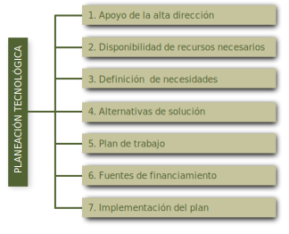
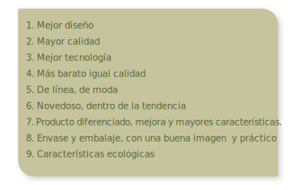
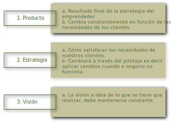
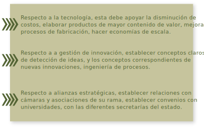
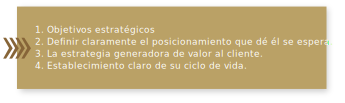
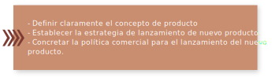

Cada logro comienza con la decisión de intentarlo.
Gail Devers
Apreciable estudiante de la Licenciatura en administración y comercio, es momento de comenzar con el
estudio
de la primera unidad de la asignatura de Innovación y Disrupción.
La gestión del proceso de innovación, dentro de la planeación estratégica de las empresas, es de sus partes
más importantes. La planeación estratégica de la tecnología es la parte que hace que la innovación
corresponda
y sea la más adecuada a los intereses de la empresa. La gestión de ideas innovadoras se refleja en la oferta
de nuevos productos, servicios o desarrollo de procesos.
La gestión, del conocimiento y de la tecnología, en una corporación son dos elementos que requieren una
especial atención, dentro de un esquema tecnológico I+D.
Objetivo de unidad
Explicar y mostrar cómo a partir de la gestión del conocimiento se da la planeación tecnológica, la cual
incorpora el uso de las tecnologías en el desarrollo estratégico de la organización, para ampliar,
consolidar
o sostener su competitividad, creando innovaciones de productos y procesos.
¡Bienvenidos a esta unidad!
1.1 Planeación estratégica de la tecnología
La planeación tecnológica se desprende de la planeación estratégica de la organización. En una organización
es importante enfrentar los cambios económicos y sociales, y mantenerse en el mercado; en una organización
en
la que la tecnológica es una parte muy importante para su funcionamiento, su planeación y diseño son parte
de
la misión de la empresa.
En términos generales un plan tecnológico es un conjunto de principios y lineamientos que proponen una
serie
de actividades para la adquisición, transferencia o asimilación de una tecnología o proceso por parte de la
organización.
Por su parte Deycy Janeth (Citado en Álvarez, 2005) plantea que, la planeación estratégica tecnológica se
da
en el contexto de la estratégica de la empresa y que, lo hace a través de la innovación:
… La innovación debe ser considerada por los miembros de las juntas directivas
como una de las estrategias clave para obtener el éxito esperado en los mercados con una proyección de
permanencia a largo plazo dentro de la sociedad. La innovación como un arma estratégica, debe ser parte de
la planeación estratégica y debe, en primera instancia, obedecer al lineamiento de la empresa, de tal
forma
que su implantación como proceso administrativo sea coherente y esté fielmente alineado con los objetivos
estratégicos de los negocios en que participa la empresa. Es así como vemos que la innovación no puede ser
considerada como un esfuerzo de campañas de ideas creadoras sin ningún fin claro y específico orientado a
los resultados de los negocios. Esta práctica es muy común en las empresas que están en su primera fase de
crear cultura de innovación pero que descuidan de primera mano el objetivo real de la innovación como es
crear ventajas competitivas sostenibles.
Innovación
La innovación puede verse como un componente de la estrategia de negocios de una organización, lo cual se
establece para fortalecer las ventajas competitivas y sostenibles que ayudan a ampliar el crecimiento y las
utilidades.
La competitividad se genera a partir de superar la demanda del mercado mediante la gestión del conocimiento
y
gestión tecnológica para lograr procesos continuos de innovación en productos, servicios y procesos.
Las innovaciones se dan en tres procesos diferentes: por incremento, por diferenciación y por
transformación.
El proceso de planeación tecnológica debe articular estos conceptos con el fin de incorporar una innovación
efectiva a los propósitos de desarrollo de la organización. De tal manera que se pueden tener innovaciones
de
mejora continua, reducción de costos, de mejoramiento de productos y de nuevos productos.
La estrategia tecnológica plantea una estrategia de innovación que está alineada con la conservación de la
ventaja competitiva, crecimiento de mercado y la satisfacción de los clientes, proveedores y empleados.
La innovación no debe ser un proceso que no se controle, debe ser, por el contrario, un proceso continuo y
dirigido a obtener resultados específicos en el corto, mediano y largo plazo, alineado además con estrategia
de negocios.
Gestión tecnológica e innovación
En toda organización hay una actividad básica relativamente rutinaria, sin la cual no se concibe la
existencia de la misma empresa, la gestión tecnológica, aunque en muchas de las ocasiones se confunda con la
gestión de la empresa.
Asociado a la tecnología surgió un término, a cuál se le llamó, gestión tecnológica que, se le definió como
el proceso administrativo de actividades de desarrollo tecnológico en todas sus etapas. La gestión
tecnología
surge y se desarrolla en el seno de las empresas y cuyo objetivo principal es el logro de una mejor
vinculación entre investigación, industria y mercado que, debe entenderse como una relación empresa,
producto,
mercado. En forma práctica esta relación es la de oferta y demanda, y que, junto a las leyes de mercado,
hacen
de la innovación, un proceso de gestión tecnológica permanente.
La gestión tecnológica es un sistema de conocimientos y prácticas relacionadas con los procesos de gestión
del conocimiento, creación, desarrollo, transferencia y uso de la tecnología. (Borda, 2017)
Vea con mucha atención el siguiente video sobre lo que es gestión tecnológica:
Glibsa Milena Rey Borda (2017). Gestión tecnológica e innovación. [Archivo de video]
Disponoble en: https://youtu.be/hKKOk8vZoz8
Planeación tecnológica
Cuando una empresa busca mantenerse dentro de parámetros competitivos debe de estar cercano a las
tecnologías
de punta, quizá nunca en la punta por ser tan cara y poco probadas, es un riesgo que solo las empresas de
gran
capital pueden soportar, pero sí cercana para poder obtener ventajas competitivas.
La planeación tecnológica es un proceso en el cual se analizan los componentes tecnológicos de un sistema y
se genera una estrategia tecnológica que determina los lineamientos con los cuales se diseñaron perfiles de
proyectos de I+D+i. El objetivo de realizar una planeación tecnológica es el diseño de proyectos
establecidos
dentro de la planeación estratégica.
En la planeación tecnológica se realiza un análisis exhaustivo de la tecnología tanto interna como externa.
De acuerdo con la estrategia empresarial la planeación además de su diseño requiere un enfoque prospectivo
que
genere ventajas competitivas.
La planeación tecnológica vista como un asunto estratégico, es presentada como una necesidad de operación
de
la empresa en todas sus áreas, y como su parte dinámica. Abordar la planeación tecnológica requiere una
integración de conceptos a través de su proceso de creación.
Janeth nos plantea lo que debemos entender por planeación tecnológica:
(citado en Álvarez, 2005)
“La planeación tecnológica es un proceso en el cual se analizan los componentes
tecnológicos de un sistema y se genera una estrategia tecnológica que determina los lineamientos con los
cuales se diseñarán perfiles de proyectos de I+D. El fin de realizar planeación tecnológica es condensar
en
proyectos concretos las políticas propuestas en la planeación estratégica. En la planeación tecnológica se
realiza un análisis exhaustivo de la tecnología tanto al interior de la organización como en el entorno.
De
acuerdo con las estrategias adoptadas por la compañía se evalúa la pertinencia de orientar dicha
estrategia
a la adquisición, mejoramiento y/o desarrollo de diversas tecnologías. Este proceso requiere un enfoque
prospectivo que genere ventajas competitivas para la organización que se encuentra en este proceso”.
Vea con mucha atención el siguiente video que muestra lo que es la planeación tecnológica.
Yuli Becerra Franco (2015). Video planeación tecnológica. [Archivo de video]
Disponoble
en: https://youtu.be/WQ2eauWv3f8
Proceso de planeación tecnológica
El proceso inicia con la planeación estratégica en donde se realiza un diagnóstico de la compañía y se
compara con la situación externa: analizando las características del entorno, incluido el análisis de la
competencia. Enseguida se determinan los objetivos, se diseñan las estrategias, para finalmente, plantear
proyectos específicos con inversiones asignadas.
El proceso de planeación tecnológica requiere información pertinente sobre las tecnologías que se
relacionan
con los procesos productivos que se desarrollan en la empresa, hacer una vigilancia tecnológica para conocer
los avances que se están generando en su entorno externo y su competencia, es muy importante.
El proceso de la planeación tecnológica se puede dividir en siete fases:

1.2 Importancia del desarrollo de nuevos productos
La importancia del desarrollo de nuevos productos, ya se trate de un producto, servicio o proceso, es que
se
considera una actividad fundamental, para que la empresa pueda sobrevivir, crecer y desarrollarse.
Después de la apertura comercial las empresas se han enfrentado a un entorno muy inestable, caracterizado
por
rápidos cambios, tanto en las necesidades de los consumidores como en la tecnología incluida en las
mercancías, haciendo que los productos se vuelvan en periodos cortos, obsoletos o fuera de las tendencias de
consumo. En lo referente a los beneficios que se logran en el desarrollo de nuevos productos, radica en que
le
permite sobrevivir, le da opciones para incrementar las utilidades, le permite conservar su participación de
mercado y promover la imagen de empresa innovadora:
Beatriz, Rata (2000) comenta sobre la importancia del desarrollo de nuevos productos:
“El desarrollo de nuevos productos (ya sea un bien o un servicio) se considera
una actividad crucial para que la empresa pueda sobrevivir (Ancona y Caldwell, 1990; Brown y Eisenhardt,
1995; Clark y Fujimoto, 1991). Las empresas se están enfrentando con un entorno muy variable caracterizado
por rápidos cambios tanto en las necesidades de los consumidores como en la tecnología, haciendo que los
productos existentes se vuelvan obsoletos rápidamente. Además, el acortamiento de los ciclos de vida de
los
productos y la competencia doméstica e internacional intensa (que incrementa la necesidad de diseñar
productos y servicios para mercados globales), hacen que el desarrollo de nuevos productos no se considere
en la actualidad como una opción estratégica sino como una necesidad (Ancona y Caldwell, 1990; Brown y
Eisenhardt, 1995; Clark y Fujimoto, 1991; Pinto y Pinto, 1990; Tusliman y Nadler, 1986)”.
Competitividad empresarial
Si tomamos en cuenta lo planteado por varios teóricos de la mercadotecnia incluido Drucker, se puede
deducir
que el propósito fundamental de la empresa es la de crear clientes, la fidelidad del cliente, por lo que la
empresa, en ese sentido, tiene dos funciones básicas, comercializar e innovar. Estas dos actividades, crean
lo
que toda empresa desde su inicio se plantea, generar valor para la empresa, creando valor para el cliente.
Es de suma importancia aprender a innovar de manera eficaz y eficiente para aprovechar la tecnología
disponible, cuyo desarrollo permite tener ideas empresariales innovadoras. El objetivo en todo momento para
tener éxito económico es ofrecer al mercado nuevos productos, servicios o procesos que se adapten a
necesidades reales o percibidas por clientes, sin olvidar a los proveedores y a la propia organización. Las
empresas invierten en innovación porque la innovación representa la mejor oportunidad para aumentar su cuota
de mercado, reducción de costos e incremento de sus ganancias.
El concepto de estrategia ocupa una posición fundamental dentro de la acción diaria de la gestión
empresarial, establece su misión y visión, mediante ella su guía, pues incluye, entre otros, la fijación de
objetivos a mediano y largo plazo, y las acciones necesarias para alcanzarlos.
Roberto Navarrete (citado en Carrasco, 2002) nos señala lo que puede concebirse como planeación
estratégica:
“Toda empresa diseña planes estratégicos para el logro de sus objetivos y metas
planteadas, dichos planes pueden ser a corto, mediano y largo plazo…
La planeación consiste, en fijar el curso concreto de acción que ha de seguirse, estableciendo los
principios que habrán de orientarlo, la secuencia de operaciones para realizarlo y las determinaciones de
tiempos y de números necesarios para su realización. (Mano, 2001)…
Stainer (1987) nos comenta que para comprender mejor el concepto de planeación estratégica debemos de
verlo
desde cuatro puntos de vista diferentes:
Primero, la planeación trata con el porvenir de las decisiones actuales. Esto significa que la planeación
estratégica observa la cadena de consecuencias de causas y efectos durante un tiempo…
Segundo, la planeación estratégica es un proceso que se inicia con el establecimiento de metas
organizacionales, define estrategias y políticas para lograr estas metas, y desarrolla planes detallados
para asegurar la implantación de las estrategias y así obtener los fines buscados.
Tercero, la planeación estratégica es una actitud, una forma de vida; requiere de dedicación para actuar
con
base en la observación del futuro, y una determinación para planear constante y sistemáticamente como una
parte integral de la dirección.
Cuarto, un sistema de planeación estratégica formal une tres tipos de planes fundamentales, que son:
planes
estratégicos, programas a mediano plazo, presupuestos a corto plazo y planes operativos”.
Factores de éxito con respecto al producto
Uno de los factores más importantes como factor de éxito, es mostrar, de manera evidente a los ojos de los
consumidores, las ventajas que sus productos o servicios tienen, con respecto a otras empresas de su rama,
es
decir su competencia directa.
Dentro de las ventajas más significativas que debe poseer el producto, están:

Factores de riesgo en la innovación empresarial
En cualquier cambio que se genere en las empresas, existen factores de riesgo, y cuando esto es a causa de
alguna innovación no es la excepción, por lo cual se pueden alterar de forma significativa las funciones y
procesos de un modelo de negocio.
Los cambios en la innovación y su entorno siempre generan cambios en la organización de la empresa, y no
siempre se está preparado para ello, puede ser que el equipo los reciba bien o adecuadamente, o puede ser se
mueva todo, y haya resistencia al cambio, debido a la cultura organizacional. Al final, cualquier innovación
va a requerir de un proceso de adecuación del resto de sistemas que no están exentos de riesgos. Por ello,
es
necesario realizar una correcta gestión de riesgos.
Así, para reducir el riesgo empresarial se debe desarrollar un sistema de información inteligente al
interior
de la organización, y que los responsables de las políticas de la empresa comprendan cómo tomar decisiones
inteligentes, bien informadas y analizadas.
Siguiendo la idea de Argudo (2017), cuando se trata de introducir ideas de negocio innovadoras en el
mercado
y la empresa. La innovación conlleva todo tipo de riesgos que, pueden ser económicos, financieros, de
proceso
o de mercado, dentro de los cuales destacan los siguientes:
a. Rechazo del producto por el mercado
Muchos de los productos o servicios desarrollados por una empresa carecen de demanda o de un
nivel de aceptación mínimo por el mercado destinatario del producto o servicio, falta de segmentación de
mercado. Por lo que no llegan a alcanzar ventas adecuadas que, cubran un nivel mínimo de utilidad. La
creatividad siempre resulta positiva si se mantiene dentro de un contexto adecuado de venta.
Es importante, por ello, estudiar al mercado objetivo, al cliente para conocer en mayor
medida
las claves de su motivación, con el objetivo, de que la empresa pueda crear innovaciones que acepte el
mercado, y asegurarse un nivel de beneficios cuando menos mínimo, adecuados al desarrollo de la empresa.
b. Pérdida de clientes
La excesiva concentración de recursos y la atención máxima sobre el nuevo producto puede
redundar negativamente en la calidad y la comercialización del resto de productos existentes. La disminución
en la atención de los productos de línea antiguos, en muchas ocasiones repercute en el servicio al cliente
de
ese segmento. --+Cuando se lanza un nuevo producto o servicio, las inversiones de marketing y de trabajo se
centran en dar salida a la línea más innovadora, en la mayoría de los casos. La falta de atención de los
viejos clientes, muchas de las veces disminuye la fidelidad del cliente.
c. Fracaso financiero
En ocasiones el cálculo del retorno de capital, cuando se diseña un nuevo producto, no es el
adecuado. La investigación, realización y colocación de nuevos productos puede resultar muy cara, en función
de su rentabilidad. El costo de lograr un cliente puede ser muy alto al principio, tomando en cuenta el
ciclo
del producto.
Esto a la vez, supondría una pérdida en la tasa de fidelización de antiguos clientes, que en
la
mayoría de los casos son aquellos que resultan más baratos para la empresa al no tener que invertir dinero
en
su captación.
d. Falta de recursos
Es muy común, que cuando se desarrolla un nuevo producto, aun cuando se planea lo más
detallado
posible, cuando se efectúan las investigaciones, y se lleva a cabo la inversión, existe un rango de error
que,
puede ser significativo dependiendo de algunas condiciones y supuestos que no se hicieron en forma adecuada.
Por lo que, uno de los riesgos más importantes en la innovación empresarial, sucede por la
falta de recursos necesarios para poder implementar los cambios estudiados y descritos por el equipo interno
de la empresa. Es decir a pesar de que la innovación sea realista y asumible, en el momento de su
implementación práctica, a veces el resultado es negativo o incluso imposible de llevar a cabo.
Proceso de desarrollo de nuevos productos
Es un proceso que requiere de un proceso administrativo completo, donde la planeación y la coordinación
ocupan un papel fundamental. La elección de la empresa en cuanto al diseño de un producto, finalmente, debe
ser compatible con los objetivos globales de la compañía y un uso eficaz de los recursos.
Uno de los procesos más comunes es la del Embudo, observe con mucha atención el siguiente video:
Fases del proceso de desarrollo de nuevos productos
La metodología para crear nuevos productos o servicios constituye un proceso a través del cual se llega a
la
introducción de un producto nuevo en el mercado.
a) Generación de ideas
La búsqueda de ideas es el punto de partida en el desarrollo de cualquier producto. Las organizaciones
buscan
ideas sobre productos que les ayuden a sus objetivos. Escuchas a toda la cadena de valor, proveedores,
clientes y a su competencia.
La idea está soportada por un proceso de gran visión, en donde se caracteriza, se visualiza y se prospecta
un
producto, servicio o proceso.
b) Revisión de ideas
Es la parte donde se revisan en conjunto con los objetivos de la empresa que, las ideas concuerdan con
mejorar la posición competitiva del negocio. Es importante hacer una proyección de rentabilidad del producto
y
utilidad de todo el negocio.
c) Conceptualización y análisis del negocio
Se hace un análisis de producto, dentro del mercado y su impacto en el negocio. Al interior se utilizan
técnicas como un FODA, respecto al mercado, se hace un análisis de la introducción del producto al mercado:
su
demanda, costos de introducción, inversión en infraestructura, necesidades de financiamiento, su
rentabilidad.
El análisis externo está enfocado en la evaluación del concepto preliminar incluyendo requisitos legales
con
clientes y consumidores para establecer necesidades y oportunidades en el mercado.
d) Desarrollo del producto y su comercialización
En esta parte el principal objetivo es medir su factibilidad técnica y comercial, es decir si los costos
son
adecuados a los precios en los que se pretende vender. Obtener una utilidad y mejorar la rentabilidad de la
empresa. Es importante tener en cuenta que el desarrollo de producto no solamente se refiere a productos
innovadores o de nueva creación. Incluye las mejoras a otros cuya modificación es requerida por el mercado.
Solo los conceptos más desarrollados, se contemplan en esta etapa.
Modelos de proceso
Existen varios modelos de procesos para la gestión de las fases de innovación. De acuerdo con Cerem
Communication (2018), los más populares en la práctica son Etapa del Proceso de la Puerta y Pensamiento de
Diseño, Lean Startup:
Etapa del proceso de la puerta: en cada acceso, se toma la decisión de continuar el
proceso
o no. Esta decisión se basa en un estudio prospectivo y la información disponible en ese momento. En la
mayoría de los casos, la realiza un gerente o un comité directivo. La calidad de una idea se evalúa en cada
una de las puertas. Es decir, se refiere a la calidad de la ejecución, la motivación comercial para
continuar
financieramente y el plan de acción que muestra lo que se debe hacer para que el proyecto tenga la
oportunidad
de tener éxito. Después de cada acceso, se puede tomar una de las siguientes decisiones:
Ir: El proyecto es lo suficientemente bueno para pasar a la siguiente etapa.
Cierre: El proyecto no es lo suficientemente bueno para seguir desarrollándose y se cierra de
inmediato.
Sostener: El proyecto no contiene los suficientes elementos como para seguir desarrollándose en
este momento, pero ha mostrado durante el proceso ser viable como para que deba cerrarse inmediatamente.
Se
pone en espera para, posiblemente, reanudarlo en una fecha posterior.
Reciclar: El proyecto es lo suficientemente bueno para desarrollarse más, siempre que se realicen
algunos cambios.
Por otra parte, en el Blog Ln Creatividad y Tecnología (citado en (Luisan.Net, 2017) mencionan lo
siguiente:
Pensamiento de diseño: Design Thinking es tener un pensamiento de diseño para analizar
algo
(un problema), tal y como lo haría un diseñador, evidentemente con la finalidad de encontrar una solución.
Las cinco etapas del pensamiento de diseño en forma simplificada según el autor serían:
Etapa 1: Empatiza: investiga las necesidades de los usuarios.
Etapa 2: Definir: indica las necesidades y problemas de los usuarios.
Etapa 3: Idear: idear desafíos y crear ideas.
Etapa 4: prototipo: inicia a crear soluciones.
Etapa 5: Prueba: pruebe las soluciones.
Lean Startup: Innovación Continua.
El concepto Lean Startup fue desarrollado por Eric Ries en 2008.
El método desarrollado por Ries se enfoca en la investigación diagnóstica, se enfoca a descubrir qué
necesidades tiene el cliente y qué salida pueden tener los productos que se van a fabricar.
Según Eric Ries, tres elementos son claves a la hora de definir una Startup:

1.3 Objetivos corporativos/Plan estratégico
El plan estratégico de una innovación responde a los objetivos generales de la empresa. En este proceso se
seleccionan los proyectos más viables, muchos planes mueren porque no hay forma de bajar las grandes
estrategias, a la gestión administrativa, al día a día, el desarrollo continuo, tomarla en consideración, es
parte importante de la planeación estratégica.
El plan estratégico tiene una serie de objetivos que dentro de una gestión administrativa inician con un
diagnóstico sobre el desarrollo del producto. Y para ello, se tienen que responder a una serie de preguntas
sobre el target, el mercado objetivo, los colaboradores necesarios al interior de la empresa.
Las preguntas serían como las siguientes: ¿quiénes son sus clientes?, ¿qué los define?, ¿qué
características
busca de un nuevo producto?, identificar el target; y muy importante, ¿quiénes son sus clientes internos o
colaboradores? ¿qué y a quienes hay que incluir para lograr la satisfacción al cliente?
Respecto a la competencia las características de su producto qué, valor tienen para el cliente. Lo cual le
permitirá diferenciar el suyo y en todo caso cómo diferenciarlo.
Cada una de estas diferenciaciones o elementos diferenciadores, lleva implícita determinadas exigencias,
tanto de estructura organizacional, como de características del personal.
Los objetivos que guíen el plan deben de plantearse, como parte de su funcionamiento y estrategia:

Internamente, establecer un sistema de inteligencia de mercado que, permita estar informado de lo que
sucede
dentro y fuera respecto a los productos que produce, o aquellos que se están gestando, relacionados con su
rama o actividad.
En este proceso de creación de ideas y conocimiento, se tiene que crear una sinergia con todos los miembros
de la organización, es decir desarrollar una cultura colaborativa, y generar grupos de colaboración.
Una parte importante dentro de la estrategia es la gestión de la innovación. La innovación es un concepto
que
involucra el cambio, movimiento, proceso creativo, es un proceso que rompe paradigmas que modifica las áreas
de confort.
Sanchez, D. (2012) nos expone lo que él considera es la planeación estratégica, cuál es su significado y su
importancia.
Las empresas para sobrevivir en el mundo de hoy, deben de plantearse metas y objetivos
específicos, relacionados con el tiempo y con niveles de autoridad necesaria en cada equipo de trabajo
destinado para los fines. El resultado obtenido de la planeación de metas y objetivos puede reflejarse de
cierta manera en el presupuesto de la empresa, y de ello depende el éxito del mismo.
Con la Planificación Estratégica se busca la concentración en objetivos factibles de lograr y en qué
negocio o área competir, en correspondencia con las oportunidades y amenazas que ofrece el entorno.
La planeación estratégica exige cuatro fases bien definidas:
Formulación de objetivos organizacionales
Análisis de las fortalezas y limitaciones de la empresa
Análisis del entorno
Formulación de alternativas estratégicas.
Es el conjunto de elementos que permiten dar dirección a una empresa hacia el logro de la visión, es el
mapa de ruta con el conjunto de referencias que van a permitir el paso hacia los objetivos específicos. La
situación actual es el punto de partida.
El norte estratégico de la planeación estratégica:
Visión
Misión
Lineamientos
Factores críticos de éxito y modelo de negocio
La estrategia y sus acciones definen el rumbo que tomará la organización y las líneas de trabajo sobre las
cuales se emprenderán las iniciativas de innovación a largo plazo y gestionar las del corto.
La Innovación es el concepto que involucra el cambio, el movimiento, el desequilibrio, la creatividad, la
transición y quebranto de los paradigmas. La gestión consistente de los procesos de innovación permite a las
organizaciones la adaptación y la posibilidad de competir ante adversarios de mayor tamaño y poder
económico,
en esquemas y escenarios más propicios donde la inteligencia de negocio podrá ser más importante que el
volumen operativo y comercial.
Toda organización debe tener un Plan Estratégico el cual oriente su gestión, es muy importante, igual de
importante es tener un Plan Estratégico para la Innovación que, permita encauzar los esfuerzos por mantener
la
oferta de productos, y ser competitivo en su mercado.
Herramientas para la gestión de proyectos
Para la administración de las innovaciones una metodología de trabajo es por proyectos, para ello en la
actualidad existen muchas herramientas. Llamadas herramientas de gestión de proyectos. Que sirven para
controlar el desempeño de todas las actividades correspondientes.
Vea con mucha atención el siguiente video, en donde se plantean algunas de las herramientas de
administración
de proyectos.
Roberto Castro - El Productivista (2019). Organiza tus proyectos gratis con estas 12
aplicaciones. [Archivo de video] Disponoble en: https://youtu.be/hZPt-XxSGag
1.4 Política empresarial para el lanzamiento de un nuevo producto
La generación de nuevos productos ya se caracteriza por una situación estratégica, ya sea porque se ha
detectado una oportunidad de negocio, ya sea por el desarrollo de los productos en línea, su realización se
da
dentro del mercado.
Una política adecuada de lanzamiento, debe de contar con una serie de elementos bien definidos:

Con un posicionamiento definido, se estará listo para aplicar la estrategia y aspectos tácticos de la
colocación del producto. Aquí entran cuestiones como de qué manera conocerán a tu producto, cómo será tu
comunicación, tu promoción.
La definición de las políticas comerciales para el lanzamiento de un nuevo producto implica:

En cuanto a los objetivos estratégicos que se encuentran en el lanzamiento de un nuevo producto, López
(2014)
señala que son los siguientes:
En cuanto a los objetivos estratégicos de Marketing Mix que adquieren relevancia en la introducción de
un
producto al mercado, se encuentran son los siguientes [Rivera y Camino (2012), Ferrel y Hartline
(2012)]:
Definir estratégicamente las diferentes variables de marketing para satisfacer de la mejor forma
posible las necesidades del consumidor.
Dar a conocer e informar de la existencia y características del nuevo producto.
Atraer a nuevos consumidores aumentará el conocimiento y el interés hacia la oferta mediante la
publicidad y acciones de relaciones públicas que muestren los beneficios del producto y conecten con los
deseos y necesidades de los clientes.
Incitar a los clientes a probar y comprar el producto con la ayuda de varias herramientas de ventas y
mediante la fijación de un precio atrayente.
Proporcionar formación e información al target para que sepan cómo usar el nuevo producto.
Establecer unos objetivos de precio que equilibren la necesidad de la empresa de recuperar la
inversión
realizada con la realidad competitiva del mercado.
Fortalecer o aumentar las relaciones con los canales de distribución y la cadena de suministro a fin
de
conseguir una distribución del producto optimizada para que este sea fácilmente accesible al público
objetivo.
Trabajar para garantizar la disponibilidad y visibilidad del producto por medio de actividades de
promoción comercial que animen a los intermediarios del canal a protegerlos, promoverlos y
almacenarlos.
En esta fase, lo primero que se determina son los objetivos comerciales a alcanzar y es ideada la
estrategia
de marketing, aunque no es hasta la etapa de introducción cuando la estrategia es implementada por completo.
En el siguiente video se presenta una estrategia de lanzamiento de un producto paso a paso, véalo con mucha
atención.
Aprendiz de Mercadotecnia (2020). Como lanzar un producto nuevo al mercado paso a paso
/Estrategias que debes conocer. [Archivo de video] Disponoble en: https://youtu.be/EcRm81y7hKk
Cierre de la unidad
En esta unidad pudimos introducirnos en un tema apasionante como es el concepto de innovación, su
definición,
su contexto, su proceso, su ciclo, su estrategia, su comercialización y su lanzamiento.
Pudimos estudiar la importancia que tiene, dentro de la estrategia de cualquier empresa, y pudimos
comprender
como, la apertura de la economía nacional, a la economía global, ha obligado a ser más creativo, y a
establecer la gestión permanente de la inteligencia de la empresa, y su desarrollo tecnológico.
Fuentes de consulta
ÁLVAREZ, D. J. (2005). De la planeación estratégica a la planeación tecnológica. "La búsqueda de ventajas
competitivas sostenibles en un ambiente global". Colombia: Universidad Autónoma de Occidente.
Aprendiz de Mercadotecnia. (2020). Como lanzar un producto nuevo al mercado paso a paso /Estrategias que
debes conocer [Archivo de video]. Disponible en:
https://www.youtube.com/watch?v=EcRm81y7hKk&ab_channel=AprendizdeMercadotecnia
ARGUDO, C. (2017). Factores de riesgo en la innovación empresarial. Recuperado de:
https://www.emprendepyme.net/factores-de-riesgo-en-la-innovacion-empresarial.html
BECERRA, Y. (2015). Video planeación tecnológica [Archivo de video]. Disponible en:
https://www.youtube.com/watch?v=WQ2eauWv3f8&ab_channel=Yulibecerrafranco
BORDA G. Rey. (2017). Gestión tecnológica e innovación [Archivo de video]. Disponible en:
https://www.youtube.com/watch?v=hKKOk8vZoz8&ab_channel=GlibsaMilenaReyBorda
CARRASCO, R. C. (2002). Planeación estratégica en los negocios. Recuperado de:
https://www.gestiopolis.com/planeacion-estrategica-en-los-negocios/
CASTRO, R. (2015). Organiza tus proyectos gratis con estas 12 aplicaciones [Archivo de video]. Disponible
en:
https://www.youtube.com/watch?v=hZPt-XxSGag&ab_channel=RobertoCastro-ElProductivista
Cerem Comunicación,. (2018). INNOVA CON EL MODELO ETAPA-PUERTA. Disponible en:
https://www.cerem.mx/blog/innova-con-el-modelo-etapa-puerta
LÓPEZ, L. d. (2014). Políticas Comerciales de los Nuevos Productos. España: Universidad de Oviedo.
Luisan.Net. (2017 ). ¿QUÉ ES DESIGN THINKING? PENSAMIENTO DE DISEÑO. Recuperado de
https://www.luisan.net/blog/diseno-grafico/que-es-design-thinking
QUEZADA, C. (2015). Proceso de innovación [Archivo de video]. Disponible en:
https://www.youtube.com/watch?v=hdgQrx6Jy3g&ab_channel=CarlosQuezada
Rata, B. M. (2000). Desarrollo de nuevos productos: consideraciones sobre la integración funcional.
Cuadernos
de Estudios Empresariales.
SÁNCHEZ, D.. (2012). EOI. Recuperado de:
https://www.eoi.es/blogs/dianaesperanzadelacruz/2012/02/28/planificacion-estrategica/
 Presentación de
unidad
Presentación de
unidad Objetivo de unidad
Objetivo de unidad Fuentes de consulta
Fuentes de consulta